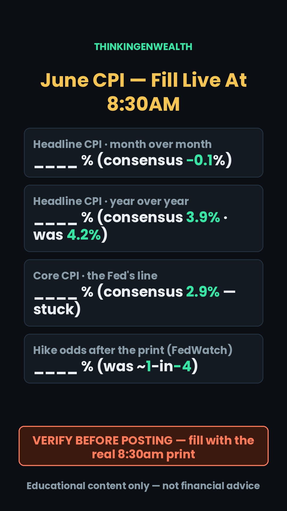
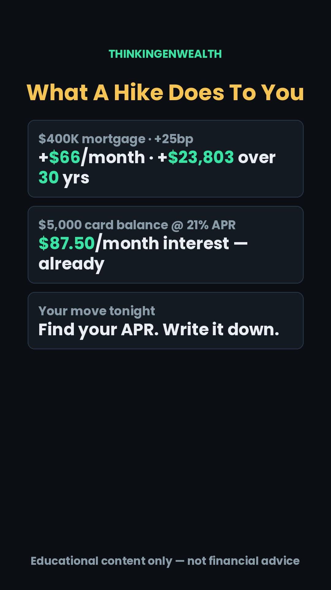
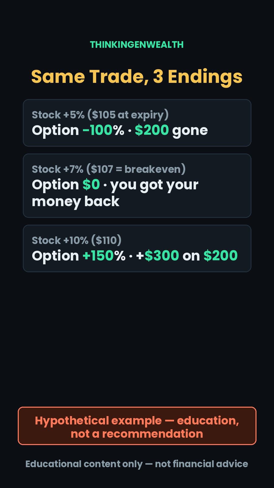
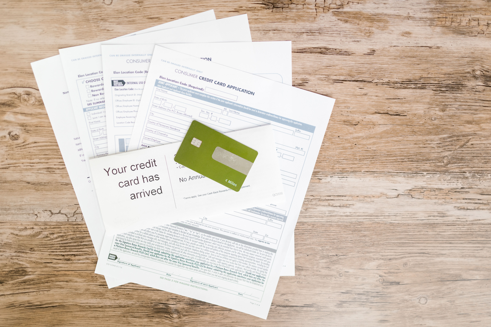
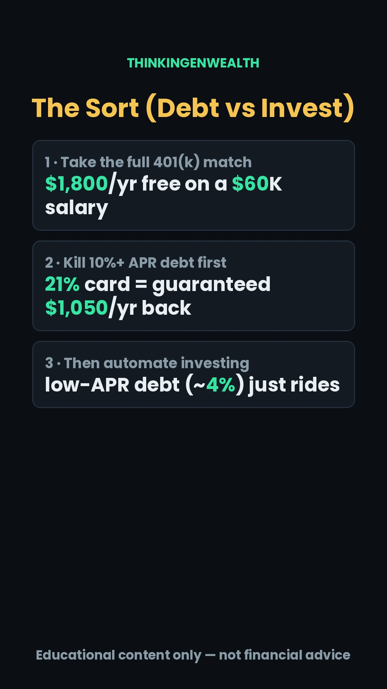

Weekly Content Engine
THINKINGENWEALTH · GENTHINKERS
The one thing that decides this week: SHIPPING. Only 2 of 3 posts shipped last week; the collab beat is 4 planned weeks old with 0 ships — Saturday is a must. ⚠ And the YouTube strike warning is in week 2 — clear/appeal it MONDAY before anything uploads.
Last week's numbers pulled Jul 12 · Jul 5 – 11
How the platforms did + what to lean into
YouTube + TikTok + InstagramHow the engine runs
Quality over volume
3 short-form posts (Tue news-react · Thu chart evergreen · Sat collab) + the Sunday podcast anchor. Mon/Wed/Fri are PREP/ENGAGE days — record-ahead, comments, clip-cutting.
Monday is the studio day
Thu + Sat record Monday (both are evergreen-safe). Tuesday records AFTER the 8:30am print — never before. Sunday's podcast records with the week's actuals filled in.
Spikes peak, evergreen off-peak
TikTok live band 2–7pm ET · IG peak 3pm · YT long-form AM. News-reacts take the peak; the Search evergreen posts off-peak and compounds anyway.
Tuesday Jul 14 is a super-day, the biggest single morning of the summer: June CPI at 8:30am ET (consensus: headline −0.1% m/m → ~3.9% y/y from May's 4.2% — oil crashed ~21% to ~$77 post-ceasefire — while core sits stuck at ~2.9%) + all five big banks report pre-market (JPM cons. $5.49 EPS / $48.7B) + Fed Chair Warsh's first Humphrey-Hawkins testimony at 10am — with futures pricing a real ~1-in-4 chance the Fed HIKES on Jul 29 (first hike since 2023; funds rate 3.50–3.75% held since Dec). Then PPI + Warsh's Senate round + ASML Wed · retail sales + TSMC Thu · UMich Fri. Sources: bls.gov · federalreserve.gov · CME FedWatch · Zacks/IG previews · Kiplinger — verified Jul 12; re-verify at record time.
The anchor pair Tue reach-spike + Sun podcast anchor
They'll Say Inflation Fell. Your Bill Won't Agree. (CPI × 5 Banks × Warsh)
One morning decides whether the Fed hikes on Jul 29: the CPI headline is set to DROP on cheap oil while core stays stuck — the perfect "don't get fooled" concrete reveal, in the exact lane of every TGW reach winner (shutdown 2.2M · "Buy the dip?" 27.3K and compounding · Trump accounts 505/663 last week). Record AFTER the 8:30am print — the FILL-LIVE tile takes the real numbers.
A Fed HIKE in 2026? What This Week's 3.9% Really Decided
The episode reads the whole week back with receipts: the print (headline vs core), Warsh's first Humphrey-Hawkins, what the five banks confessed about the consumer, and the worked math of a maybe-hike world ($66/mo per 25bp on a $400K mortgage). Through-line question opened in the cold open, answered in the final segment. Full rundown below + scripts/podcast-rundown.md.
This week's podcast segment rundown + screen-shares
A Fed HIKE in 2026? What This Week's 3.9% Really Decided
B-option title: "The Week That Decided If Your Rates Go UP Again" · Through-line: did this week green-light the first hike since 2023 — and what does that do to your family's numbers?
Screen-shares: cpi-day-dashboard.html (cold open + Seg 1 — FILL-LIVE print boxes) · hike-path-dashboard.html (Seg 2 — odds strip + the 25bp pass-through table) · bank-earnings-dashboard.html (Seg 3 — consensus vs actual + consumer-stress lines). Fill every FILL-LIVE box with the week's actuals before recording.
Full segment rundown — talking points + screen-share cues
- Hook (35–54 cut): "This week, one Tuesday morning — one inflation report, five bank earnings, and a brand-new Fed chair in front of Congress — moved the odds on whether you and your family pay MORE on every borrowed dollar in 2026. Inflation 'fell' to [FILL]… and somehow a rate HIKE is still on the table. By the end of this episode you'll know exactly what that does to your mortgage, your card, and your plan — with the receipts."
- 🎬 Planted clip lines (verbatim): "One Tuesday morning decided whether your card's APR jumps past 21 percent." · "$66 a month — that's what a single Fed move does to a $400K mortgage. $23,803 over the loan." · "The banks know if you're cracking before you do — and this week they showed their hand." · "Inflation 'fell' this week — and your grocery bill didn't get the memo."
- 🖥️ cpi-day-dashboard.html open on the FILL-LIVE headline panel.
Segment 1 — The print: headline vs core (0:45–3:45)
- Consensus going in: headline −0.1% m/m → ~3.9% y/y (from 4.2%) · core +0.3% → ~2.9%. [FILL: the actual print.]
- Mechanism: oil −21% to ~$77 post-ceasefire dragged the headline; core is the Fed's line. ✏️ Circle "All items" vs "All items less food & energy."
- The worked cost: 3.9% on $60K spending = $2,340/yr; gap vs 2% target = $1,140/yr.
- Re-anchor: "A number doesn't set your APR. The guy who testified 90 minutes later does — segment two."
Segment 2 — Warsh's first Humphrey-Hawkins + the hike math (3:45–7:00)
- House Tue 10am · Senate Wed 10am — [FILL: 1–2 actual quotes on the 2% target]. Funds rate 3.50–3.75%, held 4 meetings; hike odds were ~22–30% pre-print [FILL: where they ended].
- 🖥️ hike-path-dashboard.html — the pass-through table: 25bp on $400K = +$66/mo, +$23,803/30yr · $5K card @21% = $87.50/mo already.
- Re-anchor: "The Fed sets the price of your debt — whether Americans can PAY theirs, the banks just told us. Segment three."
Segment 3 — What the banks confessed (7:00–10:30) · D Waugh
- Consensus went in: JPM $5.49 / $48.7B · BAC $1.12 / $30.7B · implied moves 4.4–6.0%. [FILL: actuals + tape.]
- The 3 lines we read: net interest income · card delinquencies 30d+ · loan-loss provisions. 🖥️ bank-earnings-dashboard.html, ✏️ draw on the delinquency line.
- Same-lane checks: ASML Wed · TSMC Thu (~$3.81/ADR, rev ~+33% — the AI-capex receipt) · retail sales Thu · UMich Fri. [FILL all.]
- Re-anchor: "None of this is a scoreboard — it's your borrowing costs. Last segment: what we do."
Segment 4 — Your money in a maybe-hike world (10:30–13:30)
- The order survives every print: full match ($1,800/yr on $60K → ~$24,870/decade at 7%) → kill 20%+ APR debt (guaranteed return) → automate past the match. A hike makes step 2 MORE valuable.
- House-shopping: the ODDS move quotes before the vote. DCA discipline: the plan doesn't flinch on one print. Bring back Saturday's EYL debate — same answer, the APR sort.
- Tease: FOMC decision Jul 28–29 — same-day react next week; June PCE lands late July.
Outro (13:30–end)
- 3 takeaways: headline fell on gas, core is the tell · 25bp = $66/mo on $400K, $87.50/mo is what a $5K card already costs · match → high-APR → automate survives every print.
- Bridge: "Fix credit → funding → brokerage → put capital to work. We're tracking the FOMC run-up all week in the Discord — link in bio." Then, last and clean: "It's Wolf, I'm outta here." / "It's D Waugh, I'm outta here."
broll/PODCAST/ (captioned teaser + 5 clean inserts + 2 photos).This week at a glance pillar × peg × who's watching · why this lineup
Every posting day crosses the 3 streams: a proven pillar, a timely peg, and the audience. TikTok skews 25–34 (M75%), YouTube 35–54 (M95%) — same anchor, two age cuts. Reach-spikes take the peak window (TikTok 2–7pm · IG 3pm); the Search evergreen posts off-peak and compounds anyway. This week's evergreen topic came straight from our own TikTok Search queries — demand already proven.
The 7-day plan click any day — the full brief, story map, clips + script live inside
broll/TUE/TUE_T1_FILLLIVE_cpi.jpg), FedWatch bookmarked, bls.gov release page bookmarked. Community poll #1: "Tuesday: CPI, 5 bank earnings, and Warsh testifies — same morning. Which one moves YOUR money most?"
⚠ FILL-LIVE tile
Payoff tile · $66/moFull script — talking points · consensus is the setup, the print is the story
Stakes (2–8s)
- "Tuesday 8:30am, one report decides whether the Fed raises rates THIS MONTH — first hike since 2023. That's your card's APR, your car loan, whether a refi waits another year. Three numbers — the third one they won't lead the news with."
Pt 1 — The headline is about to lie (PT 1 clip → FILL-LIVE tile)
- CLAIM: headline expected to DROP — maybe negative for the month. MECHANISM: cons −0.1% m/m → ~3.9% y/y from 4.2%; oil crashed ~21% to ~$77 post-ceasefire — energy drags the headline like a dog on a leash. Gas got cheaper; rent and groceries didn't.
- RECEIPT: bls.gov, first table — "All items" vs "All items less food and energy." Two worlds, one page.
- WORKED: 3.9% on $60K spending = $2,340/yr; still $1,140 past the 2% target. ACTION: read the core line before reacting to anything.
- Transition (but): "But the Fed doesn't even read that number—"
Pt 2 — The number Warsh reads (PT 2 clip)
- CLAIM: core is the tell, expected STUCK at 2.9% — where it was a year ago. MECHANISM: core strips food/energy for the trend; Warsh testifies 90 min after the print; rates 3.50–3.75% held since Dec; futures price ~1-in-4 HIKE odds for Jul 29.
- RECEIPT: CME FedWatch — free, live. ACTION: check it before and after 8:30; the odds move IS the verdict.
- Re-hook: "And this is where it lands on YOUR statement—"
Pt 3 — Your actual numbers (PT 3 clip → payoff tile)
- CLAIM: 25bp is small on paper, real in your budget. MECHANISM: card APRs float on prime → 1–2 statements; mortgages price off EXPECTATIONS (odds move quotes before votes).
- RECEIPT: your card app tonight → statement → "Interest Charge Calculation" → write your APR down; if they hike on the 29th, watch it move.
- WORKED (on the tile): $5,000 @ ~21% = $87.50/mo already · 25bp on $400K/30yr = $66/mo = $23,803 over the loan.
- ACTION: APR written down · anything 20%+ gets attacked before new investing · house-shoppers: the odds move your quote first.
Close + CTA + sign-off (fixed order)
- "So Tuesday, when they tell you inflation fell — you'll know which number actually decides your year."
- "Comment CPI and I'll send the rate-path cheat sheet — we're tracking the print live in the Discord, link in bio."
- "It's Wolf, I'm outta here."
bank-earnings-dashboard.html actuals from Tuesday's reports; note the delinquency + provision lines for D Waugh's Seg 3. Photo · the receipt
Photo · the receipt

Payoff tile · 3 endingsFull script — talking points · hypothetical labeled, no tickers
Stakes
- "If you're about to put your first $200 into options — this one formula is the difference between a plan and a donation. Three numbers; the third one the chain doesn't even print."
Pt 1 — What the chain shows (PT 1 clip)
- CLAIM: the price isn't the price — it's ×100. MECHANISM: stock at $100; the $105 call = the right to buy at $105 by expiry; "$2" premium = $2 × 100 shares = $200 out when you tap buy.
- RECEIPT: open any chain — strike, bid/ask, expiry; the ticket says $200. ACTION: read one chain tonight, buy nothing.
- Therefore: "the real question is how far it has to RUN—"
Pt 2 — Breakeven (PT 2 clip → photo)
- CLAIM: breakeven = strike + premium. $105 + $2 = $107 → +7% needed just to get your money back.
- RECEIPT: the broker prints "breakeven" on the order preview — tap, read, don't submit.
- WORKED: at $105 (+5%!) you lose 100% · $106 → −50% · $107 → $0. Up five, still down everything.
- Re-hook: "and here's the part the chain doesn't print anywhere—"
Pt 3 — The asymmetry + the clock (hourglass clip → payoff tile)
- CLAIM: leverage cuts both ways. At $110 (+10% stock) the call returns +150% (+$300 on $200) — the temptation. The catch: +7% inside ~30 days is a big ask — count the +7% months on any 1-year chart; that's your honest odds check.
- WORKED (on the tile): +5% → −100% · +7% → 0% · +10% → +150%. The chain sells the third row; the first two are more common.
- ACTION: paper-trade 3 chains to expiry before real money · never size a position you can't lose 100% of.
Close + CTA + sign-off (fixed order)
- "So next time someone shows you a 'cheap' $2 option — you'll see the 7% bet it really is."
- "We break chains down every week in the Discord — link in bio."
- "It's Wolf, I'm outta here."
screenshare/ dashboards get the week's ACTUALS: the CPI print (both lines), the FedWatch odds move, Warsh quotes (House + Senate), bank EPS/revenue + delinquency/provision lines, retail sales, UMich (10am today).scripts/podcast-rundown.md) — planted clip lines rehearsed VERBATIM; they're next week's Shorts.
Photo · statements
Payoff tile · the sortFull script — talking points · D Waugh · re-verify the APR stat
Stakes
- "Get the ORDER wrong and it costs you real money either way — $1,050 a year in one direction, $24,870 a decade in the other. Here's the sort, with the math."
Pt 1 — Steelman their claim (PT 1 clip + their strongest 5s)
- CLAIM: they're right that waiting years to be 100% debt-free costs fortunes. MECHANISM: time in market can't be bought back; an employer match is an instant 50–100% return — no payoff "beats" it.
- RECEIPT: your benefits portal → the employer-match line. WORKED: $60K salary, 6% in = $3,600, 50% match = $1,800/yr free; skip it 10 years to prepay a 3% loan → gave up ~$24,870 at 7%. On that, EYL is right.
- Transition (but): "BUT they skipped the sorting step — and the sort is one number—"
Pt 2 — The APR decides (PT 2 clip → statements photo)
- CLAIM: high-APR debt beats the market, guaranteed. MECHANISM: avg card rate on interest-carrying accounts ~21% (Federal Reserve Q1 2026 — re-verify) = paying it off is a guaranteed 21% return; the market's ~10% long-run average is not guaranteed.
- RECEIPT: your statement's "Interest Charged" line. WORKED: $5,000 carried at 21% = $1,050/yr ($87.50/mo) vs $500 expected from investing the same $5,000 — the card wins by $550, every year, risk-free.
- Re-hook: "both sides have a receipt — which means the answer is an ORDER—"
Pt 3 — The sort (PT 3 clip → payoff tile)
- ON THE TILE: 1) take the full match, always → 2) kill anything ~10%+ APR (the 21% card first) → 3) invest past the match — low-APR debt (~4% and under) rides on schedule.
- ACTION: tonight — list every debt + its APR, one column. Over ~10% → attack. Under ~4% → minimum + invest. In between → judgment (we break those down in the Discord).
Close + CTA + sign-off (fixed order)
- "So was EYL wrong? No — they just skipped the sort. The APR is the answer, not the argument. Whose side were you on before the math?"
- "Comment MATH for the payoff-order sheet — or DM us 'DISCORD' to get in with the GenThinkers."
- "It's D Waugh, I'm outta here."
scripts/podcast-rundown.md) — all three dashboards FILLED with the week's actuals before the red light. Planted clip lines VERBATIM — they're next week's Shorts.broll/PODCAST/captioned/POD_V3_nyse-facade-flags.mp4 hook box) into the TikTok/IG evening window.broll/PODCAST/ (5 clean Wall-Street/bank clips + 2 photos + the captioned teaser).Live news pegs — the week's map verified Jul 12 · re-verify at record time
The data calendar (all ET)
- Tue Jul 14 · 8:30am — June CPI. Cons: headline −0.1% m/m → ~3.9% y/y (was 4.2%) · core +0.3% → ~2.9%. The week's spike.
- Wed Jul 15 · 8:30am — June PPI (pipeline inflation; podcast fuel).
- Thu Jul 16 · 8:30am — June retail sales (is the consumer still spending?).
- Fri Jul 17 · 10am — UMich consumer sentiment (inflation expectations hit 3.7%, a 2023-high, last month).
Earnings, same lane
- Tue Jul 14 pre-market — the five banks: JPM (cons $5.49 / $48.7B) · BAC ($1.12 / $30.7B) · Citi · Wells · Goldman. Implied moves 4.4–6.0%. Read NII, card delinquencies, provisions.
- Wed Jul 15 — ASML (cons ~$7.98 EPS; EUV bookings = the AI-boom tell).
- Thu Jul 16 — TSMC (cons ~$3.81/ADR, rev ~$40.0B ≈ +33% y/y — the AI-capex receipt).
The Fed setup
- Funds rate 3.50–3.75%, held 4 straight meetings since Dec 2025.
- Warsh's first Humphrey-Hawkins: House Tue 10am · Senate Wed 10am — 90 min after the print.
- Futures: ~22–30% odds of a HIKE Jul 28–29 (would be the first since 2023); cuts <1%. CME FedWatch, live.
- Tape going in: Dow record 53,055.91 (Jul 6) → 52,478.41 (Jul 10, −1.1%) — oil back up on Strait tension.
Your audience — best times + who's watching refreshed Jul 12
Content gaps by demographic — ideas we're under-serving
Evergreen Reel Bank this week: none pulled — full slate
This week's pull
None pulled — full slate. CPI super-day (Tue) + options evergreen (Thu) + EYL collab (Sat) + podcast (Sun) fills every posting slot under the 3+1 cadence. Standby: reel #16 ("What people think investing is vs what it is" — TIER 1, tiles ready in weeks/Jul-6-12/greenscreen/SAT/) posts in the Saturday slot ONLY if the collab can't ship for a 5th week. Rotation log updated in TGW Evergreen Reel Bank.md. Last pull: #24 (wk Jul 6–12) — no repeat before ~Sep 7.
TIER 1 — IG-priority
- Founder/story (P5): 7 Behind TGW · 8 Real work day · 9 Why I started · 13 Discord turnaround · 16 Think vs reality (STANDBY) · 17 Before vs after · 29 When it got real
- Debate/comment-trigger: 10 Investing myth · 14 Worst FYP advice · 18 Before-you-invest checklist · 22 Unpopular opinion · 32 Why it's not growing · 34 Comment for resource
TIER 2 — solid filler
- Money systems: 1 Small win · 4 Pay yourself first · 15 From $0 · 21 Where to start · 25 Emergency fund · 26 5-min move · 30 Volatile-market don'ts · 31 Instead of timing
- Process/mindset: 2 Costliest lesson · 5 Start scared · 6 Wish I knew · 11 Beginners get wrong · 12 My process · 23 Beginner vs pro · 28 Why people quit · 20 What I'm building · 35 DM me (weekend)
TIER 3 + demographic adds
- TikTok-Search filler: 3 Morning routine · 19 Free tools · 27 Why DCA wins · 33 Automate in 30s
- YT 35–54 adds: 36 401(k) match · 37 Backdoor Roth · 38 RSUs/ESPP · 39 Catch-up 50+ · 40 Generational 101
- TikTok 25–34 adds: 41 First paycheck · 42 First brokerage · 43 Buy vs rent · 44 Student loans · 45 Negotiation · 46 Custodial/529 · 47 Couples & money
Full bank with on-screen text + CTAs: TGW Evergreen Reel Bank.md (ships with this site). #24 needs its live APR re-verified whenever it posts.
Top posts pull people in with markets, credit, and "how I did X." The Discord pitch is investing. Connect them: "Fix your credit → get approved for funding → open a brokerage → then put that capital to work." One ladder, not two products. (This week it's literal: Sat's APR sort → Tue's rate math → Thu's first options lesson.)